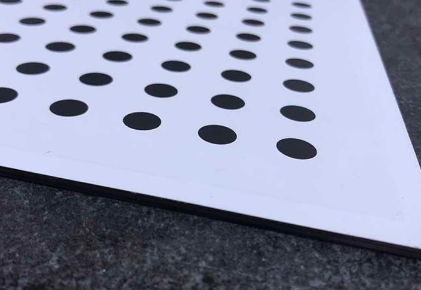
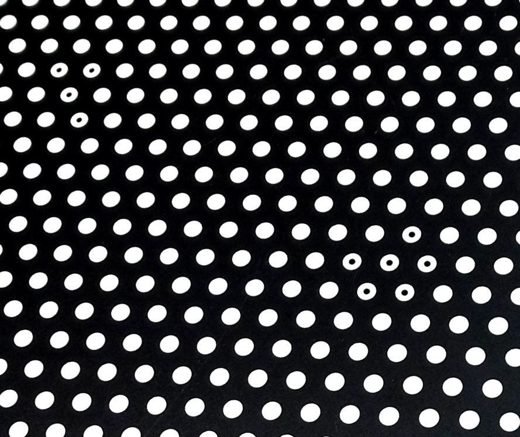
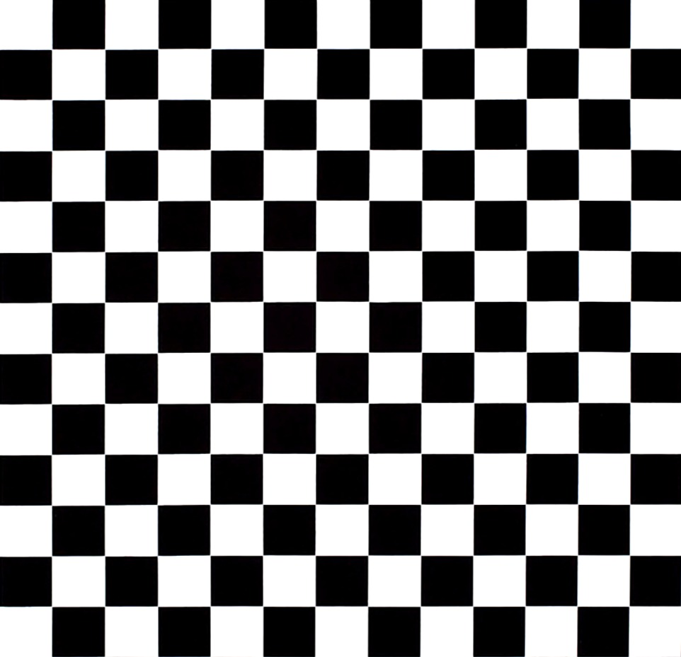

Kalibrierplatten für höchste Produktqualität
Carbono ist eine hochauflösende Kalibrierplatte aus Kohlenstofffaser mit der die Entzerrung eines Bildes in Maschine Vision Systemen korrigiert wird. Die Kalibrierungsstrukturen werden hochauflösend auf die Platte gedruckt. Damit reduziert sich der statistische Fehler der Bildentzerrung. Das Messen von Objekten und Abständen Ihrer Maschine Vision Anwendung wird nach der Entzerrung zuverlässiger. Und wenn die Qualität Ihres Prozesses oder Produktes von einer korrekten Vermessung abhängt, müssen Sie auf Carbono setzen.
Die Kohlenstofffaser weisen außerdem eine hervorragende mechanische Festigkeit und ein geringes Materialgewicht auf.
Spezifikationen
Platten-Dimensionen (LxB) variabel von 100mm bis 2000mm // Plattenstärke variabel von 1mm bis 5mm // Platten-Ebenheit von 0,1mm bis 0,3mm abhängig von den Platten-Dimensionen // Diffus-reflektierender Belag // Strukturgrößen bis zu 0.3mm // Strukturgenauigkeit ±10µm


